lower upper width
-3.24 2.76 6.00 2026-10-07
Lectures 1–6 each delivered a point estimate by assuming enough to make one available: ignorability, overlap, exclusion, monotonicity.
When the assumptions needed for a point estimate are not credible, what can the data still tell us?
Today:
Most results so far are point-identification results. Under stated assumptions, the parameter \(\theta\) is uniquely determined by the distribution of the observables.
Point identification usually requires strong assumptions.
Under weaker assumptions, the data restrict \(\theta\) to an identified set \(\Theta_I \subseteq \Theta\).
Stronger assumptions give a smaller identified set. Weaker assumptions give a wider identified set that is more credible.
The task is to report the set implied by assumptions we are willing to defend, and to say what each additional assumption buys.
Problem Set 1 compared an observational matching estimate of the effect of phone contact on turnout with a randomized benchmark.
Randomization does not point-identify the effect of contact \(D\) on turnout \(Y\).
Today’s question is what the same data say about the ATE of contact without assuming that point away.
Sensitivity analysis (Lecture 2) starts from a point estimate and asks how wrong an assumption must be to overturn it.
Bounds start from the data and ask what can be concluded when the assumption is dropped, or weakened to a stated degree.
The two are closely related. The width of an identified set is a statement about how much the unverifiable assumption is doing.
Following Manski (1990):
From the data, with SUTVA, we identify
\[ E[Y(1) \mid D=1] = E[Y \mid D=1], \qquad E[Y(0) \mid D=0] = E[Y \mid D=0], \qquad \Pr[D=1] = p. \]
We cannot identify \(E[Y(1) \mid D=0]\) or \(E[Y(0) \mid D=1]\) without further assumptions.
Example: \(Y\) is turnout (0 or 1) and \(D\) is phone contact. 20% of units were contacted. Each unit has two potential outcomes, \(Y(1)\) with contact and \(Y(0)\) without, but we observe only the one for the treatment it received.
| Share of units | Mean of \(Y(1)\) | Mean of \(Y(0)\) | |
|---|---|---|---|
| Contacted (\(D=1\)) | \(p = 0.2\) |
0.60 observed |
? unknown: between 0 and 1 |
| Not contacted (\(D=0\)) | \(1-p = 0.8\) |
? unknown: between 0 and 1 |
0.45 observed |
The ATE compares the column means, \(E[Y(1)] - E[Y(0)]\), and each column contains one unknown cell.
By total probability,
\[ E[Y(1)] = E[Y(1) \mid D=1]\,p + E[Y(1) \mid D=0]\,(1-p) \]
\[ E[Y(0)] = E[Y(0) \mid D=1]\,p + E[Y(0) \mid D=0]\,(1-p) \]
The terms \(E[Y(1) \mid D=0]\) and \(E[Y(0) \mid D=1]\) are unidentified. Because \(Y\) is bounded,
\[ y_{\min} \leq E[Y(1) \mid D=0] \leq y_{\max}, \qquad y_{\min} \leq E[Y(0) \mid D=1] \leq y_{\max}. \]
Substituting the bounds on the unidentified terms:
\[ E[Y(1)] \in \big[\, E[Y|D=1]\,p + y_{\min}(1-p),\;\; E[Y|D=1]\,p + y_{\max}(1-p) \,\big] \]
\[ E[Y(0)] \in \big[\, y_{\min}\,p + E[Y|D=0](1-p),\;\; y_{\max}\,p + E[Y|D=0](1-p) \,\big] \]
For the ATE, the lower bound pairs the smallest \(E[Y(1)]\) with the largest \(E[Y(0)]\), and the upper bound does the reverse:
\[ \text{ATE}_L = E[Y|D=1]\,p + y_{\min}(1-p) - y_{\max}\,p - E[Y|D=0](1-p) \]
\[ \text{ATE}_U = E[Y|D=1]\,p + y_{\max}(1-p) - y_{\min}\,p - E[Y|D=0](1-p) \]
Manski calls these the “no assumptions” bounds. They use only bounded outcomes. They are the tightest bounds available without further assumptions.
Suppose turnout is observed for contacted households and for those not contacted:
\[ p = \Pr[D=1] = 0.2, \quad E[Y|D=1] = 0.60, \quad E[Y|D=0] = 0.45, \quad Y \in [0,1]. \]
\[ \text{ATE}_L = 0.60(0.2) + 0 - 1(0.2) - 0.45(0.8) = 0.12 - 0.20 - 0.36 = -0.44 \]
\[ \text{ATE}_U = 0.60(0.2) + 1(0.8) - 0 - 0.45(0.8) = 0.12 + 0.80 - 0.36 = 0.56 \]
The bounds are \([-0.44, 0.56]\), with width 1. The sign of the ATE is not determined. The naive difference is \(0.15\), which lies inside the bounds. Nothing in the data favors it over any other value in the interval.
The amber cells are the unknown cells from before, filled with extreme values. For the lowest possible ATE, make \(E[Y(1)]\) as small and \(E[Y(0)]\) as large as the data allow. For the highest, do the reverse. Each column mean weights the two rows by their shares (0.2 and 0.8).
Lower bound
| \(Y(1)\) | \(Y(0)\) | |
|---|---|---|
| \(D=1\) (0.2) | 0.60 | 1 |
| \(D=0\) (0.8) | 0 | 0.45 |
| Mean | 0.12 | 0.56 |
\(\text{ATE}_L = 0.12 - 0.56 = -0.44\)
Upper bound
| \(Y(1)\) | \(Y(0)\) | |
|---|---|---|
| \(D=1\) (0.2) | 0.60 | 0 |
| \(D=0\) (0.8) | 1 | 0.45 |
| Mean | 0.92 | 0.36 |
\(\text{ATE}_U = 0.92 - 0.36 = 0.56\)
The two counterfactual cells always carry the full range \(y_{\max} - y_{\min}\) between them. That is why the width of the bounds does not depend on the data.
Suppose \(Y\) is continuous, with a normal distribution on a standardized scale (standard deviation 1), and the same data summaries as before:
\[ p = 0.2, \qquad E[Y \mid D=1] = 0.60, \qquad E[Y \mid D=0] = 0.45. \]
A normal has unbounded support, so the Manski bounds require an assumption: \(Y\) lies in \([y_{\min}, y_{\max}]\). Take \([-3, 3]\), which holds about 99.7% of a standard normal.
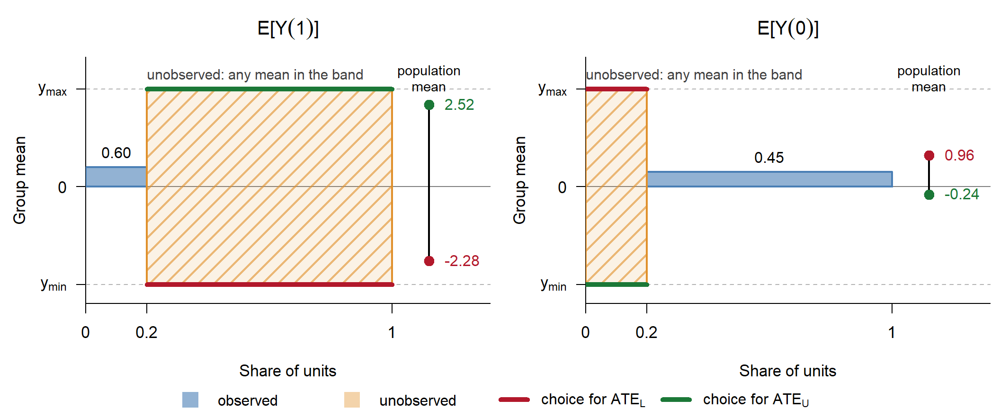
Bar width is a group’s share and bar height is its mean, so each population mean is the share-weighted area. The data fix the blue bars. The amber bar can sit anywhere in \([y_{\min}, y_{\max}]\), whatever distribution lies behind it. \(\text{ATE}_L\) takes the red ends: \(-2.28 - 0.96 = -3.24\). \(\text{ATE}_U\) takes the green ends: \(2.52 - (-0.24) = 2.76\).
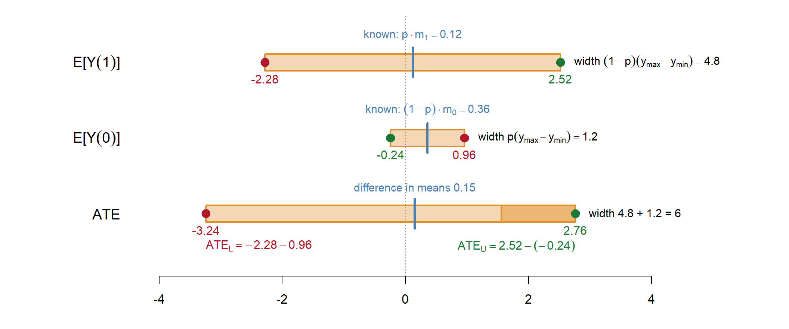
Each mean is the known contribution (blue tick) plus the unobserved share times a value in \([y_{\min}, y_{\max}]\). The ATE bounds pair opposite ends: the low end of \(E[Y(1)]\) with the high end of \(E[Y(0)]\), and the reverse. The width of the ATE interval is the sum of the two widths, \((1-p)(y_{\max}-y_{\min}) + p(y_{\max}-y_{\min}) = y_{\max}-y_{\min}\), and does not involve the observed means.
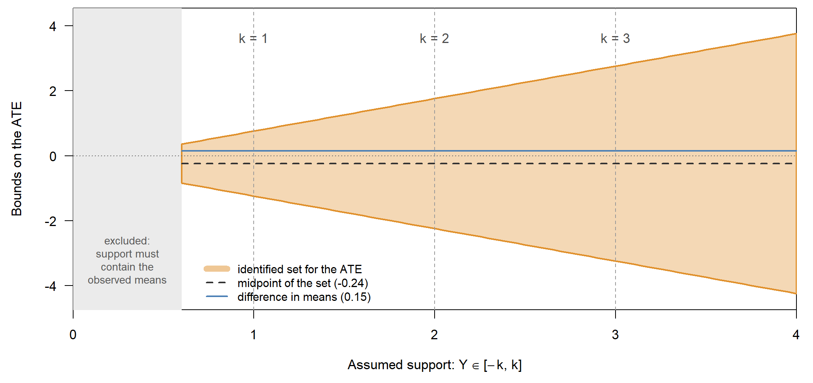
Manski bounds use only bounded outcomes. Additional assumptions shrink the identified set.
Each is an assumption about a different object. MTR restricts individual effects. MTS restricts selection.
Assume \(Y_i(1) \geq Y_i(0)\) for all \(i\).
\[ \text{ATE}_L^{\text{MTR}} = 0 \]
\[ \text{ATE}_U^{\text{MTR}} = E[Y|D=1]\,p + y_{\max}(1-p) - y_{\min}\,p - E[Y|D=0](1-p) \]
The upper bound is unchanged. The lower bound is tightened to zero.
Assume \(E[Y(d) \mid D=1] \geq E[Y(d) \mid D=0]\) for \(d = 0,1\). This restricts the unidentified conditional means:
The resulting bounds are
\[ \text{ATE}_L^{\text{MTS}} = E[Y|D=1]\,p + y_{\min}(1-p) - y_{\max}\,p - E[Y|D=0](1-p) \]
\[ \text{ATE}_U^{\text{MTS}} = E[Y|D=1] - E[Y|D=0] \]
The lower bound is unchanged. The upper bound is the naive difference in means: under positive selection, the naive comparison overstates the effect.
When both hold:
\[ \text{ATE}^{\text{MTR+MTS}} \in \big[\,0,\; E[Y|D=1] - E[Y|D=0]\,\big] \]
The interval is now informative about the sign. Its width is the naive difference in means. The cost is two assumptions, neither testable from the data.
Imbens and Manski (2004) construct \([C_L, C_U]\) such that
\[ \lim_{N\to\infty} \Pr\big[\theta \in [C_L, C_U]\big] \geq 1 - \alpha \quad \text{for all } \theta \in \Theta_I. \]
With estimated bounds \(\hat\theta_L, \hat\theta_U\), standard errors \(\hat\sigma_L, \hat\sigma_U\), and \(\hat\Delta = \hat\theta_U - \hat\theta_L\):
\[ \text{CI}_{1-\alpha} = \big[\, \hat\theta_L - c_\alpha \hat\sigma_L / \sqrt{N},\;\; \hat\theta_U + c_\alpha \hat\sigma_U / \sqrt{N} \,\big] \]
where \(c_\alpha\) solves
\[ \Phi\!\left( c_\alpha + \frac{\sqrt{N}\,\hat\Delta}{\max(\hat\sigma_L, \hat\sigma_U)} \right) - \Phi(-c_\alpha) = 1 - \alpha. \]
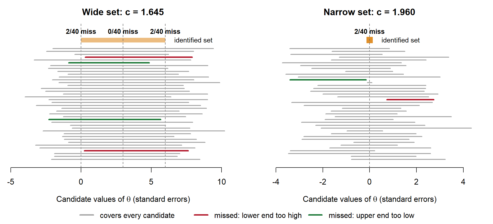
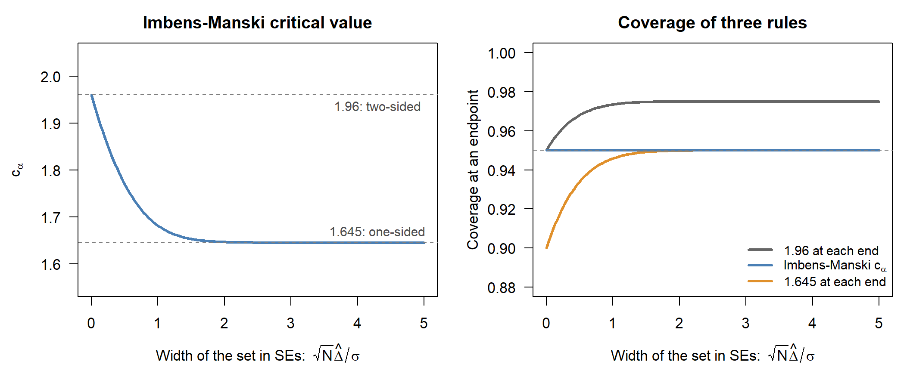
Binary instrument \(Z\), treatment \(D\), outcome \(Y\).
If the target is the ATE:
An instrument does not point-identify the ATE, but it does narrow the Manski bounds.
Balke and Pearl (1997): \(Z, D, Y\) all binary.
Under independence and exclusion, the observed \(p_{dyz}\) impose linear constraints on the probabilities of the 16 types. The ATE is a linear function of those probabilities.
The sharp bounds on the ATE therefore solve a linear program:
\[ \text{ATE}_L = \min_{\pi} \sum_t \pi_t \tau_t \quad \text{subject to the observed-data constraints}, \]
where \(\pi_t\) are type probabilities and \(\tau_t\) are type-specific treatment effects.
Suppose, in addition to the IV assumptions, monotonicity \(D(1) \geq D(0)\) and one-sided noncompliance \(D(0) = 0\).
\[ E[Y(1)] = E[Y(1) \mid D(1)=1]\Pr[D(1)=1] + E[Y(1) \mid D(1)=0](1 - \Pr[D(1)=1]) \]
Taking \(Y \in [0,1]\):
\[ \text{ATE} \in \Big[\, E[Y|D=1,Z=1]\,\Pr[D=1|Z=1] - E[Y|Z=0],\;\; E[Y|D=1,Z=1]\,\Pr[D=1|Z=1] + \big(1 - \Pr[D=1|Z=1]\big) - E[Y|Z=0] \,\Big] \]
The width is the never-taker share, \(1 - \Pr[D=1 \mid Z=1]\). This is the case in most get-out-the-vote field experiments.
Randomized assignment \(Z\), one-sided noncompliance, binary turnout \(Y\). Compliers (30% of the sample) have higher baseline turnout than never-takers, so contact is positively selected.
set.seed(136) # a draw with the expected 2 misses per endpoint (5% of 40)
n <- 1e6
Z <- rbinom(n, 1, 0.5)
C <- rbinom(n, 1, 0.3) # complier
D <- Z * C # one-sided noncompliance
Y0 <- rbinom(n, 1, ifelse(C == 1, 0.50, 0.35))
Y1 <- pmax(Y0, rbinom(n, 1, ifelse(C == 1, 0.25, 0.04))) # MTR holds
Y <- ifelse(D == 1, Y1, Y0)
c(true_ATE = mean(Y1 - Y0), naive = mean(Y[D==1]) - mean(Y[D==0]),
ITT = mean(Y[Z==1]) - mean(Y[Z==0])) true_ATE naive ITT
0.05533300 0.24814378 0.03631001 The true ATE is a population quantity. We know it here only because we simulated both potential outcomes.
p <- mean(D); m1 <- mean(Y[D==1]); m0 <- mean(Y[D==0])
manski <- c(m1*p + 0*(1-p) - 1*p - m0*(1-p), m1*p + 1*(1-p) - 0*p - m0*(1-p))
mtr <- c(0, manski[2])
mts <- c(manski[1], m1 - m0)
both <- c(0, m1 - m0)
q1 <- mean(D[Z==1]); a <- mean(Y[Z==1 & D==1]) * q1; y0 <- mean(Y[Z==0])
iv <- c(a - y0, a + (1 - q1) - y0)
bounds <- rbind(Manski = manski, MTR = mtr, MTS = mts, `MTR + MTS` = both,
`IV, one-sided` = iv)
colnames(bounds) <- c("lower", "upper"); round(bounds, 3) lower upper
Manski -0.377 0.623
MTR 0.000 0.623
MTS -0.377 0.248
MTR + MTS 0.000 0.248
IV, one-sided -0.208 0.491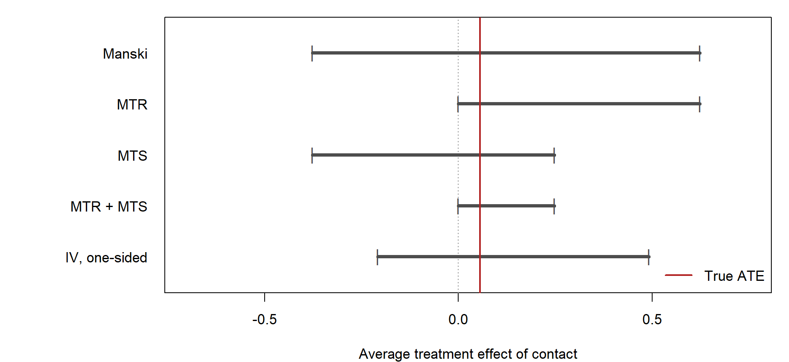
MTR and MTS each narrow the Manski set from one side, and together give the tightest interval, at the cost of two untestable assumptions. The IV bound narrows the set using the randomization instead, and so does not rely on either. All sets contain the true ATE here because the simulation satisfies every assumption.
\(D\) is randomized, but we only see \(Y\) for units who respond to the survey. Let \(S_i(d) \in \{0, 1\}\) indicate whether unit \(i\) responds under treatment \(d\), and \(S_i = S_i(D_i)\).
The same structure appears whenever \(Y\) is only defined for some units: wages exist only for the employed (the extensive margin is \(S\), the intensive margin is \(Y\)).
Lee (2009) assumes treatment can only induce response: \(S_i(1) \geq S_i(0)\) for all \(i\).
| Stratum | \(S_i(0)\) | \(S_i(1)\) | Verdict |
|---|---|---|---|
| Always responders (AR) | 1 | 1 | We love these people. |
| Never responders (NR) | 0 | 0 | Never observed, but not because of treatment. Harmless. |
| Induced responders (IR) | 0 | 1 | Look like IV compliers, but they break the comparison. |
| Defiers | 1 | 0 | Ruled out by monotonicity. |
The target is the effect among always responders: \(\Delta_{AR} := E[Y_i(1) - Y_i(0) \mid \text{AR}]\).
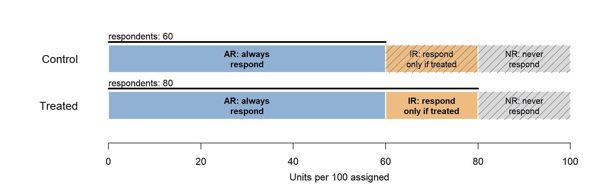
Control respondents are all AR. Treated respondents are AR plus IR, and we cannot tell which is which.
Randomization makes the strata shares \(\pi_{AR}, \pi_{IR}, \pi_{NR}\) the same in both arms. Monotonicity then gives
\[ p_0 := \Pr(S=1 \mid D=0) = \pi_{AR}, \qquad p_1 := \Pr(S=1 \mid D=1) = \pi_{AR} + \pi_{IR}. \]
Since \(h \geq 0\), the mixture implies \(0 \leq (1-q)\, g(y) \leq f(y)\). Let \(y_u\) be the \(u\)-quantile of \(f\).
Claim. Among all densities \(g\) with \(0 \leq (1-q)\, g \leq f\), the mean is smallest for \(g^* = f \cdot \mathbf 1\{y \leq y_{1-q}\} / (1-q)\): the bottom \(1-q\) of the treated respondents.
Proof. Both \(g\) and \(g^*\) integrate to 1, so \[ \int y\, (g - g^*)\, dy = \int (y - y_{1-q})\, (g - g^*)\, dy \geq 0. \] Below \(y_{1-q}\), \(g^*\) is at its cap \(f/(1-q)\), so \(g - g^* \leq 0\) and \(y - y_{1-q} \leq 0\). Above it, \(g^* = 0\), so both factors are \(\geq 0\). \(\square\)
The same argument with the top \(1-q\) gives the maximum. Subtracting the control mean:
\[ \Delta_{AR,L} = E[Y \mid D=1, S=1, Y \leq y_{1-q}] - E[Y \mid D=0, S=1] \] \[ \Delta_{AR,U} = E[Y \mid D=1, S=1, Y \geq y_{q}] - E[Y \mid D=0, S=1] \]
The bounds are sharp: each is attained if the IR all sit at the top (or bottom) of the treated distribution.
If \(p_1 = p_0\), then \(q = 0\), nothing is trimmed, and \(\Delta_{AR}\) is point-identified.
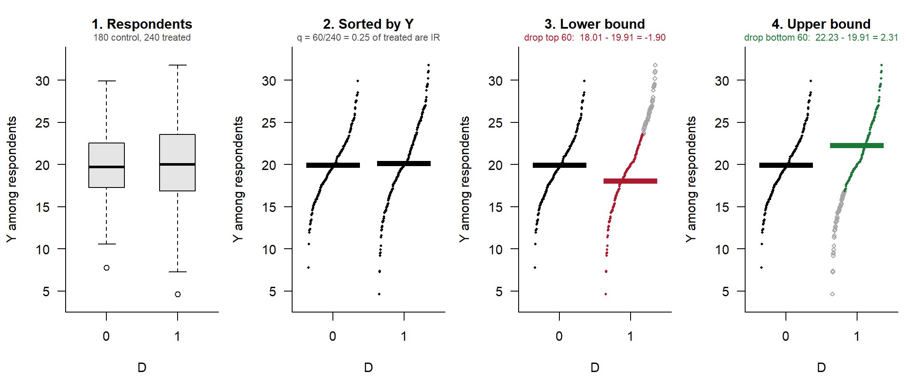
Suppose \(p_1 = 0.80\) and \(p_0 = 0.60\), so \(q = 0.25\). In this simulation the true \(\Delta_{AR}\) is 2.
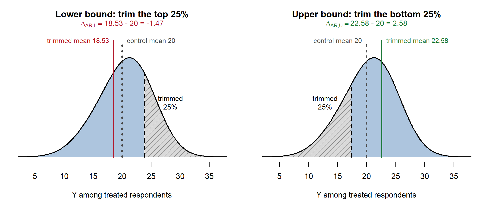
Inference:
With covariates \(X\), one can weaken the monotonicity assumption and obtain tighter bounds (Samii, Wang, and Zhou 2026; Semenova 2025).
Two equal-sized age groups, with \(S_i(1) \geq S_i(0)\) in each. Let \(\pi_x = \Pr(X=x)\) and \(p_d(x) = \Pr(S=1 \mid D=d, X=x)\).
| \(p_0(x)\) | \(p_1(x)\) | \(q(x) = \frac{p_1(x) - p_0(x)}{p_1(x)}\) | |
|---|---|---|---|
| Young | 0.4 | 0.8 | 0.50 |
| Old | 0.8 | 0.8 | 0 |
| Pooled | 0.6 | 0.8 | 0.25 |
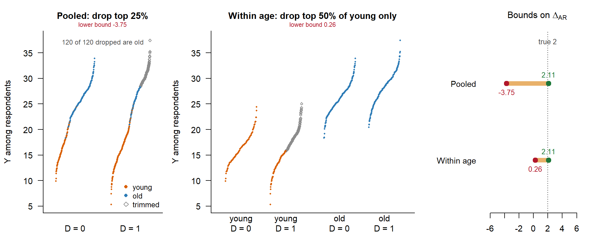
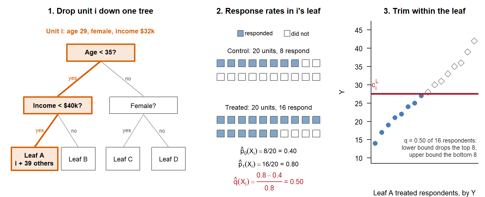
A forest does not repeat steps 2–3 tree by tree. Trees only define neighbours: pool them first, \(\alpha_{ij} = \frac{1}{B}\sum_b \frac{\mathbf 1\{j \in L_b(X_i)\}}{|L_b(X_i)|}\), then compute \(\hat p_0(X_i)\), \(\hat p_1(X_i)\), \(\hat q(X_i)\) and the cutoff \(c_i^L\) once, as \(\alpha\)-weighted rates and quantiles. Unit \(i\)’s observed \(Y_i\) is compared with \(c_i^L\), and the per-unit scores are averaged.
Samii, Wang, and Zhou replace empty cells with the adaptive neighbourhoods of generalized random forests.
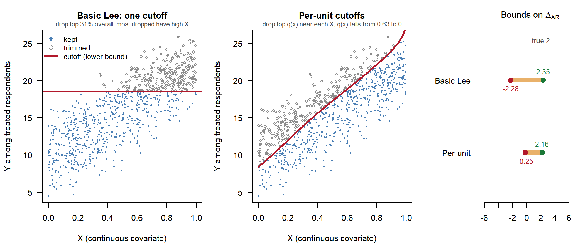
Problem Set 2B applies these tools to the Arceneaux, Gerber, and Green (2010) data.
The ordering and much of the content of Parts II, III, V and VII follow Cyrus Samii’s lecture on partial identification (NYU, March 2026).